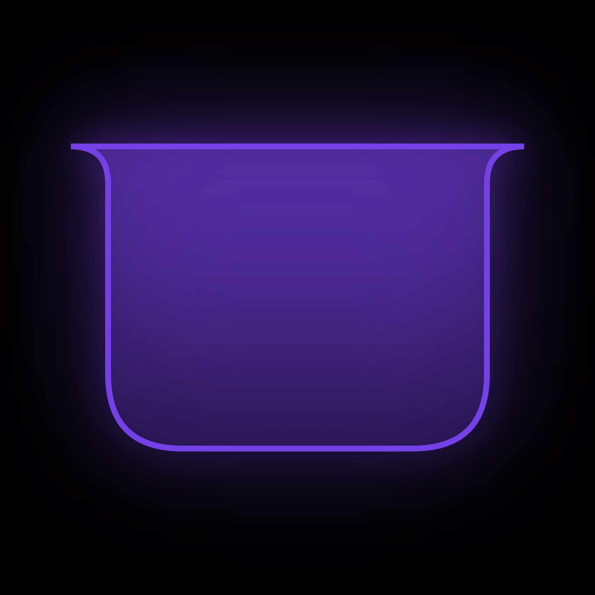

Music from anywhere
Apple Music, Spotify, YouTube in your browser — pause, skip, cover art, and progress, no extensions needed.

Your MacBook's notch as an interactive panel: music from any source, clipboard history, quick notes, and pinned snippets. Zero network requests.
Apple Music, Spotify, YouTube in your browser — pause, skip, cover art, and progress, no extensions needed.
Text, images, and files with their source shown. Passwords never make it into the feed.
Short text at your fingertips, no separate app and no extra clicks.
Email, phone number, other frequent values. Click to paste, ⌥+click to copy.
One query finds a clipboard entry, a note, and a pin all at once.
Notchka makes zero network requests — no telemetry, no analytics, no update checks. All data stays local on disk. The download count above is tallied by GitHub on its own side: the app knows nothing about this page.